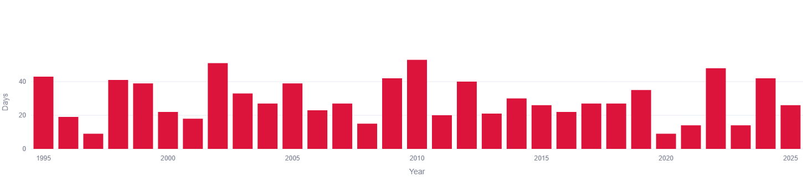
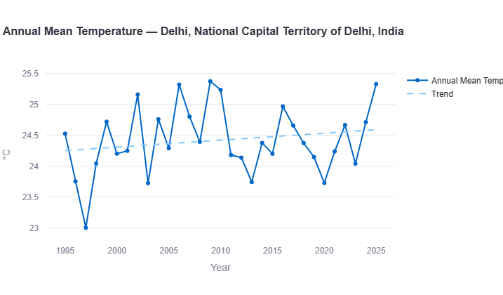

News coverage of Delhi's heat tends to report individual numbers in isolation — a heatwave here, a record daily high there — using inconsistent thresholds from one report to the next (some track ≥40°C, others ≥42°C, others use IMD's official multi-criteria heatwave definition). This report uses a single, consistent threshold (≥40°C) across the full 1995–2025 ERA5/ERA5-Land reanalysis record to show the actual 30-year pattern, and compares it directly against Delhi's annual mean temperature trend — already covered in our full Delhi climate trend report.
How Many Extreme Heat Days Does Delhi Get?

The chart above shows no smooth trend line — deliberately. Extreme-heat-day counts are highly variable year to year, driven by heatwave clustering, western disturbance timing, and monsoon onset, none of which move in lockstep with the slower multi-decade warming signal in annual averages.
Key Figure: Typical Range
The full 30-year range runs wider still, from single-digit years to more than 50 — see the record years below.
Record Years — Highest and Lowest
| Rank | Year | Days ≥40°C |
|---|---|---|
| 1st (record) | 2010 | ~52 days |
| 2nd | 2002 | ~50 days |
| 3rd | 2022 | ~48 days |
| Tied lowest | 1997 & 2020 | ~9 days each |
2010's total of roughly 52 days means Delhi spent close to seven weeks of that year at or above 40°C — more than triple the count in its lowest years.
Is It Getting Worse? A More Complicated Answer Than It Looks
Delhi's annual mean temperature is unambiguously rising — our full climate trend report puts it at roughly +0.13°C per decade, climbing from a trend-line baseline near 24.2°C in the mid-1990s to about 24.6°C by 2025. Given that, you'd reasonably expect extreme-heat-day counts to be climbing at a similar steady pace. They aren't.
Splitting the 30-year record into three roughly equal periods:
| Period | Average Days ≥40°C/Year |
|---|---|
| 1995–2004 | ~30.0 |
| 2005–2014 | ~30.9 |
| 2015–2025 | ~26.5 |
If anything, the most recent decade-plus shows a slightly lower average than the two decades before it — essentially flat to mildly declining, not accelerating. That doesn't mean Delhi's heat problem is improving; annual mean warmth, humidity, and nighttime temperatures (which drive most heat-health impacts) are separate metrics this chart doesn't capture. It means a simple day-count against a fixed threshold is a noisier, less trend-sensitive indicator than annual mean temperature — a genuinely useful distinction for anyone using "days above 40°C" as a shorthand for "how much has climate change affected this city."
The Disconnect: Record Heat-Day Years vs. Record Warm Years

This is the most counterintuitive finding in the data. Delhi's two warmest years by annual mean temperature are 2009 and 2025, both around 25.3°C — but their extreme-heat-day counts were 42 and 26 days respectively, nowhere near the record. Meanwhile 2010, the record year for extreme heat days (~52), had an annual mean temperature of only about 24.2°C — close to the middle of the 30-year range, not a standout warm year at all.
Key Insight
The likely explanation: 2010's extreme heat was probably concentrated in an intense pre-monsoon heatwave stretch, pushing the day-count up sharply without necessarily lifting the annual average once cooler months are factored in. 2009 and 2025, by contrast, appear to have been warm more consistently across the year rather than through a small number of extreme spikes. The practical takeaway: a single "hottest year on record" headline and a single "most extreme-heat-days on record" headline can — and in Delhi's case, do — refer to two completely different years.
How Delhi Compares to Other South Asian Cities
| City | Extreme Heat (≥40°C, days/yr) |
|---|---|
| Delhi | 20–45 typical, up to 52 in record years |
| Lahore | 20–46 |
| Islamabad | 0–20 (noisy) |
| Karachi | 0–5 |
| Mumbai | ~0 |
| Colombo | 0 |
Delhi and Lahore stand well apart from the rest of this series — both inland, continental cities that regularly cross 20+ extreme heat days a year, compared to near-zero for coastal cities moderated by sea proximity. See our full South Asia climate trend report for how all cities compare across both temperature and rainfall.
See Delhi's full interactive temperature and heat trends, or compare it against any other South Asian city.
Open the Interactive Dashboard →Data Source & Methodology
All figures in this report are derived from the Open-Meteo Historical Weather API, built on ERA5 and ERA5-Land reanalysis data produced by the European Centre for Medium-Range Weather Forecasts (ECMWF) through the Copernicus Climate Change Service, covering January 1995 through 2025. "Extreme heat days" are defined as days where the reanalysis daily maximum temperature reaches or exceeds 40°C — the same threshold used consistently across every city in this series, distinct from IMD's official multi-criteria heatwave definition or the varying thresholds (often 42°C+) used in individual news reports.
Because day-count-against-threshold statistics are inherently noisier than smooth averages — a single intense heatwave spell can swing a year's total substantially — the period averages above should be read as a general pattern rather than a precise trend rate the way this site's temperature and rainfall trend figures are.
Frequently Asked Questions
How many days a year does Delhi hit 40°C or above?
Based on 1995–2025 ERA5 reanalysis data, Delhi typically records between 20 and 45 such days per year, with a full range across the 30-year record spanning from as few as 9 days (1997, 2020) to a record 52 days (2010).
Is Delhi's extreme heat getting worse?
It depends what you measure. Delhi's annual mean temperature is clearly rising (~+0.13°C per decade). But the count of days crossing the 40°C threshold shows no comparably clear upward trend across the same 30 years — it's dominated by high year-to-year variability rather than a steady climb.
What is Delhi's record year for extreme heat days?
2010, with approximately 52 days at or above 40°C — the highest in the 1995–2025 ERA5 record, ahead of 2002 (~50 days) and 2022 (~48 days).
Is Delhi's warmest year also its year with the most extreme heat days?
No — and this is the most notable finding in the data. Delhi's two warmest years by annual mean temperature (2009 and 2025, both around 25.3°C) had relatively unremarkable extreme-heat-day counts (42 and 26 days respectively), while 2010, the record year for heat days, had a fairly average annual mean temperature.
How does Delhi's extreme heat compare to other South Asian cities?
Delhi is among the most extreme-heat-exposed cities in this series, alongside Lahore, both regularly recording 20 or more days per year above 40°C — far more than coastal cities like Mumbai, Colombo, or Karachi, which see such days rarely or almost never.
See the full Delhi climate trend report for temperature and rainfall trends across every season, or the South Asia climate trend report for how all cities in this series compare.